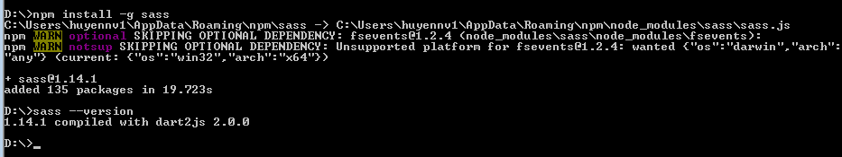

Sass là một cách viết CSS kiểu mới, giúp bạn quản lí code CSS một cách khoa học hơn, dễ quản lí, sửa chữa, thích hợp khi làm các dự án lớn. Nhờ các tính năng như variables, functions, mixins... các mã CSS sẽ trở nên có tổ chức cho phép các nhà phát triển web làm việc nhanh và ít gặp lỗi hơn.
Các bạn có thể tìm hiểu thêm về SASS tại trang chủ http://sass-lang.com/.
Sass là một CSS Processor có đuôi file là *.scss khác với CSS là *.css file SASS thì trình duyệt không hiểu được nên bạn phải dùng cách nào đó để chuyển nó sang file CSS.
Có thể sử dụng phần mềm Koala. Phần mềm hỗ trợ Windows, Linux, Mac. Phần mềm hỗ trợ cả Less nữa.
Cài đặt bằng dòng lệnh:
Comment
Bạn có thể sử dụng comment chuẩn của CSS /* */ hoặc // của Sass để comment 1 dòng.
Compile ra màn hình:
sass demo.scss
Compile ra file:
sass demo.scss demo.css
1. Nested Rules
Quy tắc lồng nhau cho phép viết các code CSS lồng vào nhau. Khi biên dịch, Sass sẽ cho ra tập tin CSS với đầy đủ các selector theo đúng chuẩn. Kiểu viết này giống với kiểu phân cấp trong HTML.
Ví dụ:
ul.menu {
list-style: none;
li {
float: left;
a {
text-decoration: none;
color: #696969;
}
}
}
2. Referencing Parent Selectors
Sử dụng kí hiệu& đứng trước hiệu ứng mà chúng ta muốn. Ví dụ ta muốn khi hover vào thẻ a thì có gạch chân và đổi màu chữ thì viết như sau:
a {
text-decoration: none;
color: #696969;
&:hover {
text-decoration: underline;
color: #999;
}
}
Ta có thể sử dụng với các cái khác như
::before,
::after, khi thành phần đó có class nào đó (ví dụ
&.active).
1. Variables
Giống với các ngôn ngữ lập trình ta khai báo biến để lưu trữ một giá trị được sử dụng nhiều lần. Để khai báo một biến ta sử dụng kí tự$ đằng trước tên biến.
$text-success: #3c763d;
Để sử dụng ta chỉ gọi tên biến đó ra:
h1.big-title { color: $text-success; }
Tham khảo
https://sass-lang.com/documentation/file.SASS_REFERENCE.html